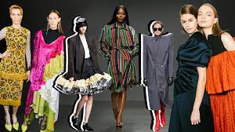

The French were the first to turn fashion into a business, rather than just a hobby,
and they've been exporting their style since the 17th century, when most of the world had no idea what fashion was.
Paris is now regarded as one of the world's fashion capitals, with London, New York, and Milan.
Fashion has always lived at the intersection of art and consumerism, and nowhere is this more apparent than in today's society.
Every season, as it shapes us, the way we view our desires, bodies, and eras changes fashion.
Fashion is at the heart of it all in Paris.
Instead of courtiers, France now had the bourgeoisie and, as the driving force that made the economy move from hand to hand (as in, they could actually move money around), French fashion found its way into society.